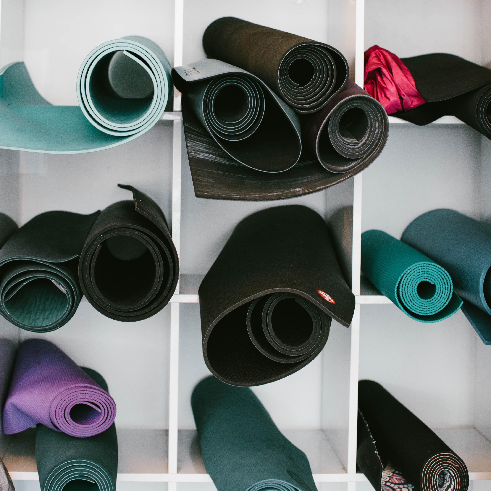
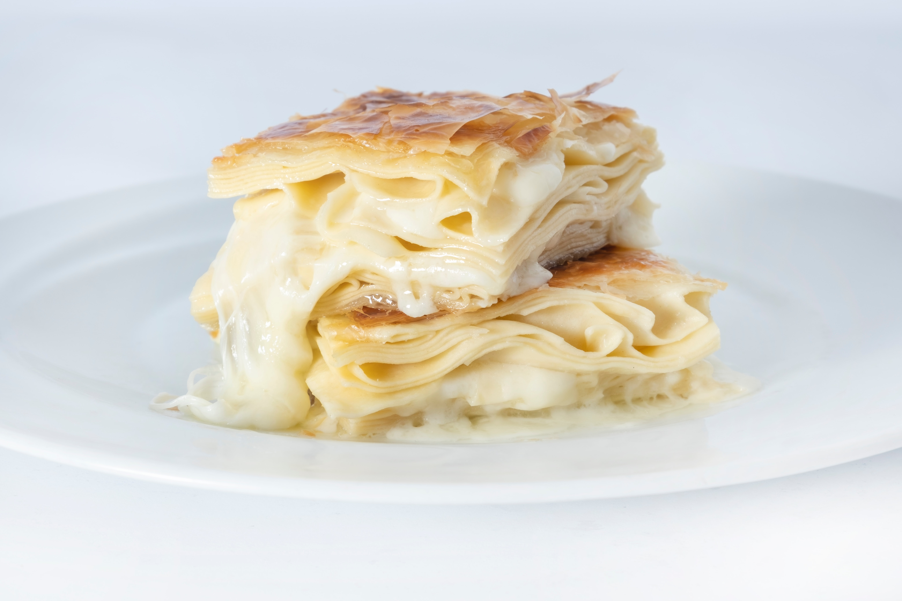

Merhaba ben Zeynep Duvarcı. 18 yaşındayım. Sakarya Üniversitesi Bilgisayar Mühendisliği birinci sınıf öğrencisiyim. Ailemle birlikte İstanbul'da yaşıyorum. Tokatlıyım. Hobilerim kitap okumak, dikiş dikmek, müzik dinlemek ve egzersiz yapmak. Hobilerimle ilgili kullandığım siteleri ve bilgileri sırasıyla aşağıda açıkladım.
-
 Kitap okumayı küçüklüğümden beri seviyorum. Kitap okumanın en sevdiğim yanı kendimi başka insanların yerindeymiş gibi hissetmem ve o insanların maceralarını onlarla beraber yaşamamdır. En sevdiğim kitap Reşat Nuri Güntekinin Çalıkuşu kitabıdır.
Kitap okumayı küçüklüğümden beri seviyorum. Kitap okumanın en sevdiğim yanı kendimi başka insanların yerindeymiş gibi hissetmem ve o insanların maceralarını onlarla beraber yaşamamdır. En sevdiğim kitap Reşat Nuri Güntekinin Çalıkuşu kitabıdır.
Kitap hakkında kısaca bilgi sahibi olmak için tıklayınız.
Yazar hakkında bilgi sahibi olmak için tıklayınız. -
Dikiş dikmeyi lise sonda öğrendim. Özellikle üniversite sınavından sonra stres atmamda çok yardımcı oldu. Renkli kumaşları kendi zevkime göre dizayn etmek ve onları üstümde taşımak çok hoşuma gitti.
Dikiş dikerken bana fikir veren videoları görmek için tıklayınız. -
 Müzik dinlemek benim için hep dinlenmek demekti. Özellikle sakin ve ritim olarak yavaş ilerleyen şeyler dinlemek hoşuma gidiyor. Genelde çok sevilen parçaların bile asıl halleri yerine akustik versiyonlarını dinliyorum.
Müzik dinlemek benim için hep dinlenmek demekti. Özellikle sakin ve ritim olarak yavaş ilerleyen şeyler dinlemek hoşuma gidiyor. Genelde çok sevilen parçaların bile asıl halleri yerine akustik versiyonlarını dinliyorum.
En sevdiğim müziklerin olduğu oynatma listesine gitmek için tıklayınız. -

Sabahları erken kalkmak ve egzersiz yapmaya bayılıyorum. Güne başlamak için çok iyi bir tercih fakat bunu her gün yapmak çok zor. Egzersiz yapmayı bırakmak çok kolay fakat tekrar başlamak çok zor. O nedenle olabildiğince zinciri kırmamaya çalışıyorum.
En çok yaptığım egzersizleri görmek için tıklayınız. -

En sevdiğim yemek su böreğidir ve en güzel su böreğini babaannem yapar :) O nedenle herhangi bir tarif bırakamıyorum.